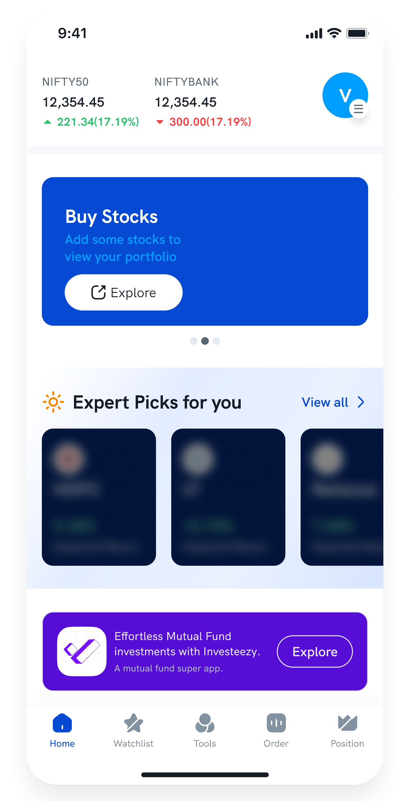
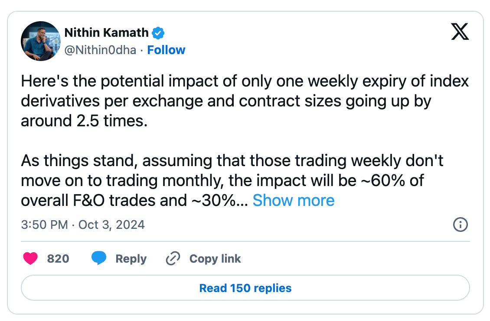
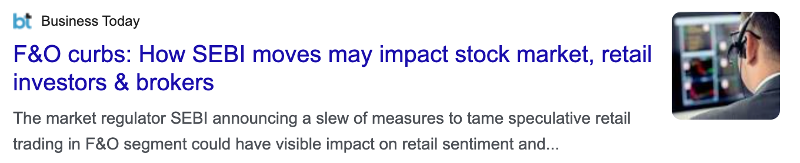
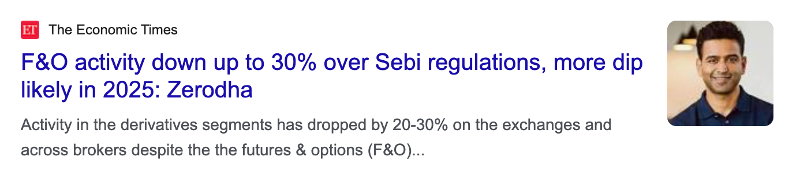
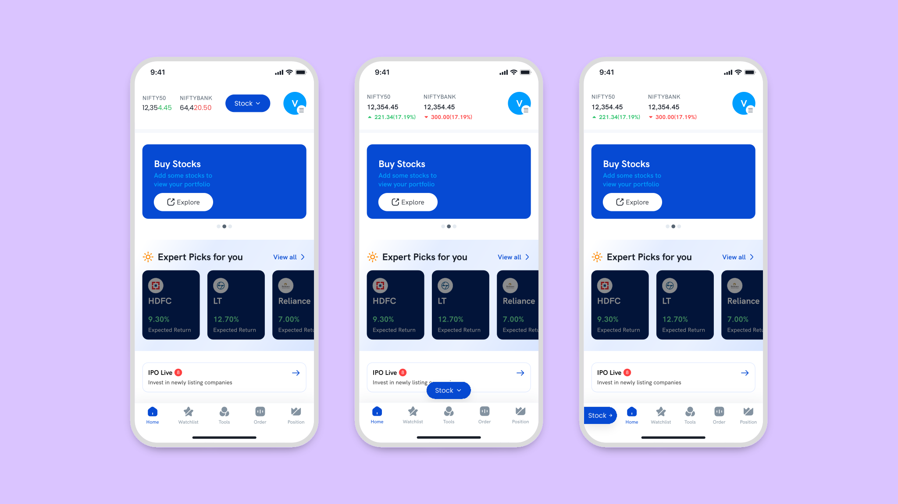
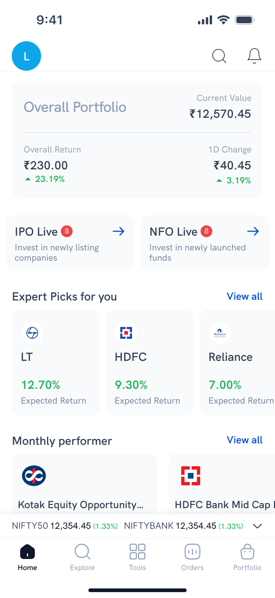

Fintech · 200,000+ users · Nov 2024 – Aug 2025
Two apps. One portfolio. No way to see it.
Rupeezy had two apps. Stocks and F&O lived in Rupeezy Trade; mutual funds lived in Rupeezy Invest. A user who held both had two logins and two partial views of their own money — the mutual fund app couldn’t show their equity holdings, and the trading app couldn’t show their funds. To answer “how am I doing?”, they had to open both and add it up themselves. The banner at the bottom of that screen is Rupeezy’s own mutual fund app — the most valuable slot on our trading home screen, spent telling people to go download something else.
Move your cursor across to compare — before and after the merge.
That slot was the most valuable space in the app.
Rupeezy had a mutual fund product. It lived in a different app, and there was no way to sell it from inside this one. So the most valuable space on our home screen was spent pushing users out of the app they were already in — and whatever they bought over there never showed up here.
That banner is the entire business problem, sitting in production, in our own app.

Rupeezy Trade’s home screen before the merge, promoting Rupeezy’s own mutual fund app — a separate download for the other half of your portfolio. The banner’s position wasn’t fixed; it moved up or down depending on what else needed space. Mutual funds competed for slots on the trading app’s home screen like an unrelated product. After the merge, they stopped being a banner and became a tab.
01 — Context
Two apps
A stockbroker founded in 2003, digital since 2017. Around 125 people.
Stocks and F&O. 97% of company revenue. I owned this product end to end.
Mutual funds. Much smaller.
The split cost us three things. A mutual fund investor couldn’t buy a stock and a trader couldn’t start an SIP, so there was no cross-sell in either direction. Every compliance change and every campaign had to be built twice. And 97% of revenue sitting in one product line isn’t concentration — it’s a single point of failure.
Everyone knew this. Merging had been discussed for a long time. Nothing forced it.
02 — The forcing function
Then something forced it



Trading revenue was down roughly 75%.
We were hit harder than the industry estimate because our business was concentrated in exactly the segment the regulation targeted.
The merge stopped being a growth idea. Mutual funds were no longer additional revenue — they were the only other business we had.
03 — Phase 1
The version I shipped and didn’t believe in
The first meeting decided the direction: fold Invest into Trade, because Trade had the users and the revenue.
For how the two would coexist, the reference was consumer apps already running multiple products — Swiggy switching between food and Instamart. A switch that changes the entire app context.
The reasoning was speed, and the reasoning was correct. The regulation had landed. Shipping in weeks mattered more than shipping the ideal thing in months.
Where the switch lived was my call. I ran three iterations.

{{ o.title }}
{{ o.tag }}{{ o.why }}
Phase 1 shipped 15 January 2025
I didn’t believe in it.
Not the execution — that was fine, and it was fast. I didn’t believe in the model underneath it, and shipping it meant committing the product to that model.
So I shipped it anyway, and kept building the version I thought was right.
Refusing would have been precious. The business needed something in January. Treating January as final would have been worse.
04 — The argument
Why a switch is wrong for a broker
The mode-switch pattern was the obvious answer. It was also the wrong one.
A mode switch works when the two modes are genuinely different jobs.
Ordering dinner and buying groceries are different jobs. Different intent, different session. Switching the whole app makes sense, because you actually stopped doing one thing and started another.
Stocks and mutual funds are not different jobs. They’re two ways of doing the same thing: putting money somewhere and watching what it does.
The portfolio makes it obvious. If I want to check my portfolio, I want my portfolio — my stocks and my mutual funds are both my money. Under a switch, moving from one to the other means changing the entire application. The navigation shifts. The product becomes a different product. For what should be the smallest possible movement between two views of the same thing.
A switch makes product the primary axis and task the secondary one. For a broker, that’s backwards.
And it doesn’t grow. A switch is binary. Commodities were already being discussed. Every product after the second one is either a new mode, or a switch that quietly turns into a menu.
05 — The model
What doesn’t change
Not what makes these products different — what stays the same across all of them.
Explore to find something. Evaluate it. Act — buy it, or save it. Track what you own. Adjust. Stocks, mutual funds, F&O, commodities, anything the business adds in five years — that sequence never changes. Only the asset class changes.
The journey is invariant. The product is variable. So use two axes, not one.
Home · Explore · Tools · Orders · Portfolio
Stocks · F&O · Mutual Funds · and whatever’s next
Whichever axis you’re on stays fixed while the other varies.
In Portfolio, that’s fixed — the tabs move me between stock and mutual fund holdings without leaving Portfolio.
In Stocks, that’s fixed — the bottom nav moves me through explore, order and portfolio without leaving stocks.
One structure, read two ways, depending on what you came to do.
06 — Home
Home is the exception
Every other screen is scoped to one product. This one deliberately isn’t.
Home has no product tabs at all.
It’s the one consolidated screen, because it’s where cross-sell has to happen. Overall portfolio at the top — everything the user holds, across every product. Then expert picks. IPO Live and NFO Live side by side, new stock listings and new fund offers given equal weight. Monthly performers, movers, gainers, losers. Mutual fund categories a first-time investor actually recognises — hybrid, ELSS, invest with ₹100. Indices and news.

This was the first time a Rupeezy user could see everything they owned in one number.
A trader opening this screen sees mutual funds sitting next to the stocks they came for. Not as an ad. As part of the same product.
The banner is gone, because the product it pointed to is now on this screen.
07 — Detail
The decisions underneath
{{ d.title }}
{{ d.note }}
08 — Language
The architecture changed the language
Home · Watchlist · Tools · Order · Position
Home · Explore · Tools · Orders · Portfolio
Two of those aren’t renames.
“Position” is F&O vocabulary. You hold a position in derivatives, and you close it. A mutual fund investor doesn’t hold positions — they hold investments, for years.
“Watchlist” is a trader’s habit. You watch a stock because you’re waiting on a price. Fund investors don’t watch and wait; they browse categories and compare.
Navigation written for traders would have quietly told every mutual fund investor this app wasn’t built for them.
Structure decides language. I didn’t set out to rename the navigation — the architecture made it necessary.
09 — Migration
Moving the people
Architecture solves the product. It doesn’t move anyone.
One constraint made migration possible: KYC was already unified across both apps. A user verified in Invest was already verified in Trade. Accounts linked automatically — no re-verification, no documents, no starting over. In a regulated product, that’s the difference between a migration and an abandonment.
{{ st.text }}
The escalation was deliberate. Early on, it’s information and the user keeps control of their screen. Later, it is the app. We didn’t want to trap anyone at the start. We did need everyone moved by the end.
10 — Buy-in
Getting it approved
I explained the two-axis model in a meeting. It didn’t land.
Talking about navigation models in the abstract rarely does — the difference between “a switch” and “two axes” is hard to hear and easy to see.
So over a weekend I built it. Real screens, clickable, showing what it feels like to move between portfolio views without the app changing underneath you.
The initial preference was still the simpler option — it was already built and already shipped. I walked through why mode-switching is wrong for a broker, why two axes scale as products get added, and why this protects existing fund investors instead of absorbing them.
Everyone agreed. We went ahead with it.
11 — Outcome
What shipped
The two-axis navigation is live in Rupeezy today, across stocks, F&O and commodities.
Mutual funds are still separate.
I left in August 2025 while it was in development, so I don’t know why — sequencing, compliance, or a decision the team made after I’d gone.
The honest outcome
The architecture I argued for is in production and carrying the products it was built to scale across. The merge it was designed to enable hasn’t fully happened.
12 — Reflection
What I’d do differently
{{ n.title }}
{{ n.note }}
Next case study — 02
A partner platform that shipped in six weeks and lifted conversion 2.4×.
Rise Portal — a B2B referral product for Rupeezy’s digital partners, built from nothing while the numbers had to be chased down by hand.